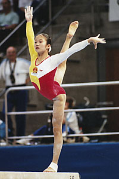

Meng Fei (CHN)
1997 World Vault Silver Medalist

Meng Fei was born on March 22, 1981.
Competition Results
1994
Catania Cup: 5th AA
1995
USA-BLR-CHN Meet: 2nd AA
World Championships: 2nd Team, 27th AA, 8th V
1996
China Cup: 1st AA
Pacific Alliance Championships: 10th AA
1997
Asian Games: 1st Team, 5th AA, 1st FX
East Asian Games: 2nd UB
Intl. Team Championships: 3rd Team, 5th AA
SUI-CHN-BLR Meet: 2nd AA
Trophee Massilia: 1st UB, 5th V
World Championships: 3rd Team, 5th AA, 2nd UB, 4th FX
1998
American Cup: 2nd AA
Goodwill Games: 4th AA, 4th FX, 8th UB
3-on-3 International: 6th Team
This page was created on September
02, 2006 and was last updated on December 30, 2006.
© Gymn Forum